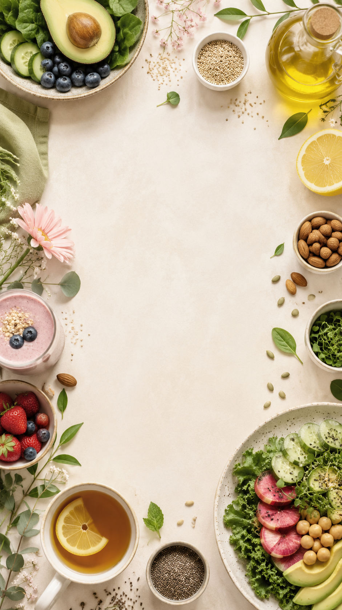

Разбор
Анкета, жалобы, питание, образ жизни, анализы при наличии.
Холистический нутрициолог · Онлайн по всему миру
Помогаю вам приблизиться к оптимальному самочувствию через питание, образ жизни и индивидуальные рекомендации. Работаю онлайн в любой точке мира.

лет врачебного опыта
Canadian nutrition education
Моя задача — не дать универсальную диету, а собрать понятный план: питание, образ жизни, добавки и поддержка привычек с учётом вашей ситуации.
Смотреть подход →
Обо мне
Я Holistic Nutrition Clinical Practitioner. За плечами — 12+ лет врачебного опыта в хирургическом отделении Харьковской офтальмологической больницы им. проф. Л. Л. Гиршмана.
В Канаде я окончила Canadian School of Natural Nutrition, Calgary Branch, состою в CSNN Alumni Association и Canadian Association of Natural Nutritional Practitioners.
Мой подход соединяет клиническое мышление, нутрициологию, работу с симптомами, рационом, образом жизни и реалистичными шагами, которые человек может внедрять без перегруза.
Образование
Я сочетаю врачебный опыт, нутрициологическое образование и дополнительное обучение в области превентивного подхода, питания и поддержки здоровья.
Подход
Моя задача — не дать универсальную диету, а собрать понятный план: питание, образ жизни, добавки и поддержка привычек с учётом вашей ситуации.
Анкета, жалобы, питание, образ жизни, анализы при наличии.
Персональные рекомендации по питанию, образу жизни и добавкам.
В сопровождении — корректировки, ответы в мессенджере и отслеживание динамики.
Чёткое понимание, как внедрять новые привычки без перегруза.
С какими вопросами можно обратиться
Разбираем питание, образ жизни и привычки, которые могут влиять на самочувствие, и подбираем реалистичные шаги для вашей ситуации.
вздутие, метеоризм, диарея/запор, изжога, пищеварительный дискомфорт
разбор питания, образа жизни и факторов, которые могут влиять на самочувствие в цикле
структура питания, пищевые привычки, насыщение, режим и устойчивые изменения
частый герпес, ячмень, ОРВИ, постковидное состояние, физические нагрузки, беременность и лактация — в рамках нутрициологической поддержки
питание, нутриенты, режим, стресс и работа совместно с врачом при необходимости
нет сил утром, перепады настроения, снижение концентрации, переедание, срывы, частые перекусы
Варианты работы
Все консультации проходят онлайн. Цены указаны в USD.
Персональная онлайн-консультация
Формат без поддержки после встречи. Подходит, если нужна ясность по ситуации и персональный план для самостоятельного движения дальше.
Консультация и сопровождение 2 месяца
Для тех, кому важна не только первичная консультация, но и сопровождение, адаптация под изменения и помощь при откатах.
Сопровождение 6 месяцев
Длительный формат для внедрения привычек, адаптации плана под жизненные изменения и экспертной работы за кадром.
Питание, добавки и образ жизни для поддержки глаз
В этом формате я объединяю опыт в офтальмологии с нутрициологическим подходом.
Отзывы
Отзывы опубликованы с разрешения клиентов. Личные данные скрыты.
Гайды
Скачайте бесплатный PDF или посмотрите фрагмент платных гайдов перед покупкой на внешней платформе.
Бесплатный материал с рекомендациями по питанию, образу жизни, нутриентам, стрессу и сну.
Продолжение к бесплатному гайду: список полезных добавок для повышения энергии с активными ссылками на iHerb.
Руководство по использованию натуральных семян для поддержки гормонального баланса на протяжении цикла.
FAQ
Онлайн. Перед встречей вы заполняете анкету и, при необходимости, пищевой дневник. На консультации разбираем жалобы, питание, образ жизни, анализы при наличии и формируем план.
Нет. Информация носит образовательный характер. Я не ставлю диагнозы, не назначаю лечение и не отменяю назначения врача.
Да, если анализы уже есть, их можно обсудить в рамках нутрициологического разбора. При необходимости я могу рекомендовать обсудить дополнительные исследования с врачом.
Все цены на сайте указаны в USD.
Если вы уже выбрали формат консультации, вы можете сразу забронировать удобное время в календаре. После записи вы получите подтверждение на email и ссылку на онлайн-встречу.
Информация на этом сайте, а также мои консультации, гайды и рекомендации носят образовательный и информационный характер и не являются медицинской консультацией, диагностикой или лечением.
Я не ставлю диагнозы, не назначаю и не отменяю лекарственные препараты, не заменяю врача и не оказываю экстренную медицинскую помощь.
Мои рекомендации по питанию, образу жизни и добавкам подбираются индивидуально и не должны использоваться вместо консультации с вашим врачом или другим лицензированным медицинским специалистом.
Если у вас есть заболевание, выраженные симптомы, беременность, грудное вскармливание, вы принимаете лекарства или планируете изменить лечение, пожалуйста, предварительно обсудите это с врачом.